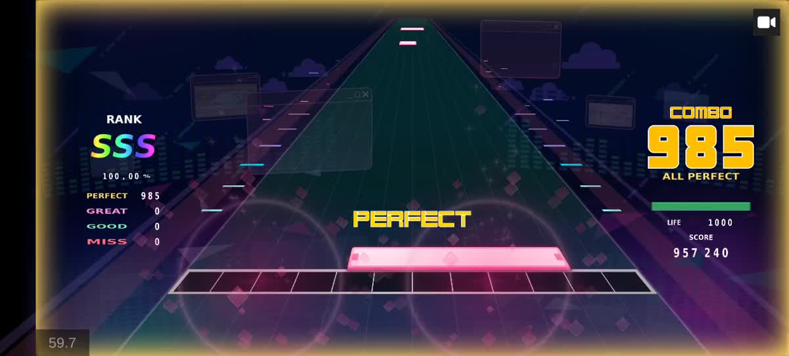

01 / HUD dynamique
Précision, jugements, score, vie et combo en temps réel.
Une expérience de jeu de rythme personnalisée sur Sonolus, avec un HUD inédit, des rangs dynamiques et des effets qui évoluent avec tes performances.
https://benjicoroctaling.github.io/sekai-ex/Dans Sonolus, ouvre Ajouter un serveur et colle cette adresse.

AnythingBecomeMoe & TETOKITO
Chart : Benji Coroctaling
Version V23 · SEKAI EX 1.0
Consulter le catalogue API ↗Précision, jugements, score, vie et combo en temps réel.
Un contour lumineux évolutif : doré en AP, cyan en FC, violet en combo normal.
FAST / LATE et décalage en millisecondes.
Réglages de taille, position et visibilité du HUD.
Visionnage avec statistiques et navigation temporelle.
Animations de fin de partie et affichage du score final.
Le rang évolue selon ta précision. Le SSS récompense un All Perfect ; le F correspond à une vie épuisée.

Première version officielle du moteur.
HUD configurable et célébrations de fin de partie.
Vie, score et effets lumineux évolutifs.